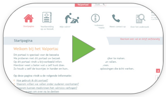
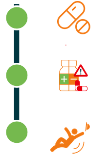

Welkom op het Valportaal!
Dit Valportaal is speciaal voor patiënten van de valpoli (valpolikliniek).
We proberen uw bezoek aan onze valpoli prettiger en gemakkelijker te maken.
Op dit Valportaal vindt u bijv. informatie over vallen en het voorkomen ervan.
Na afloop van uw bezoek krijgt u advies op maat hoe u vallen kunt voorkomen.
Hierdoor weet u beter wat u ook zelf kunt doen om uw kans op een val te verkleinen.
Zo houdt u de touwtjes in handen en kunnen we samen op zoek naar oplossingen die écht werken.
We proberen uw bezoek aan onze valpoli prettiger en gemakkelijker te maken.
Op dit Valportaal vindt u bijv. informatie over vallen en het voorkomen ervan.
Na afloop van uw bezoek krijgt u advies op maat hoe u vallen kunt voorkomen.
Hierdoor weet u beter wat u ook zelf kunt doen om uw kans op een val te verkleinen.
Zo houdt u de touwtjes in handen en kunnen we samen op zoek naar oplossingen die écht werken.
U vindt op deze pagina de volgende informatie:
- Hoe gebruik ik dit Valportaal?
- Waarom willen we vallen onder ouderen voorkomen?
- Waarom kunnen medicijnen het valrisico beïnvloeden?
- Waarom willen we vallen onder ouderen voorkomen?
Hoe gebruik ik dit Valportaal?
Klik op het filmpje hieronder om te ontdekken hoe dit Valportaal werkt:
Waarom willen we vallen onder ouderen voorkomen?
Iedereen vindt het fijn om zo lang mogelijk zelfstandig en onafhankelijk te blijven en eigen regie te houden.Eén van de beste manieren om hiervoor te zorgen is, voorkomen dat u valt.
Vallen is namelijk de meest voorkomende oorzaak van letsel bij ouderen.
Steeds meer ouderen bezoeken de Spoedeisende hulp (SEH) omdat ze gevallen zijn.
Het is dus heel belangrijk om de kans op een val onder ouderen te verkleinen.
De kans op een val noemen we het ‘valrisico’.
Het voorkomen van een val noemen we ‘valpreventie’.
Voorbeelden van valpreventie zijn: zorgen voor voldoende dagelijkse beweging, het dragen van veilig schoeisel en veilig medicijngebruik.
Waarom kunnen medicijnen het valrisico beïnvloeden?
Een belangrijke maatregel om vallen te voorkomen heeft alles te maken met medicijngebruik.Dankzij onderzoek weten we namelijk dat sommige medicijnen bijwerkingen kunnen veroorzaken.
Ook combinaties van medicijnen kunnen bijwerkingen veroorzaken.
Die bijwerkingen kunnen tot een val leiden.
Voorbeelden van zulke bijwerkingen zijn klachten zoals duizeligheid, een lage bloeddruk bij opstaan en slaperigheid.

Soms kan het aanpassen van medicijngebruik zorgen voor een lager valrisico.- Iemand slikt (een combinatie van) medicijnen.
- Deze medicijnen kunnen bijwerkingen geven.
Bijvoorbeeld: duizeligheid en slaperigheid. - De bijwerkingen kunnen tot een val leiden.
Bespreek dit uiteraard altijd eerst samen met de behandelende dokter.
Let op, pas uw medicijnen dus niet zelf aan.
De behandelende dokter kijkt goed naar de medicijnen en past deze aan, als dat mogelijk is.
Door goed met uw dokter te praten en uw medicijngebruik aan te passen, kan een val hopelijk voorkomen worden.